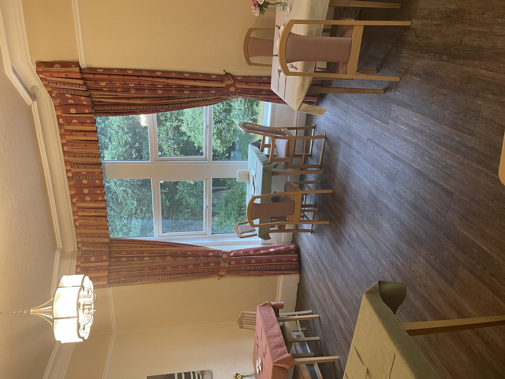
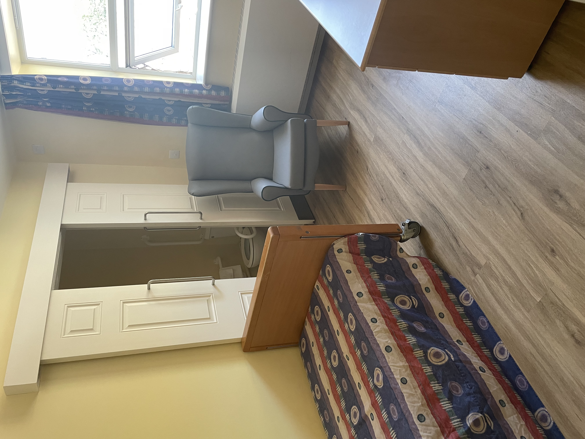
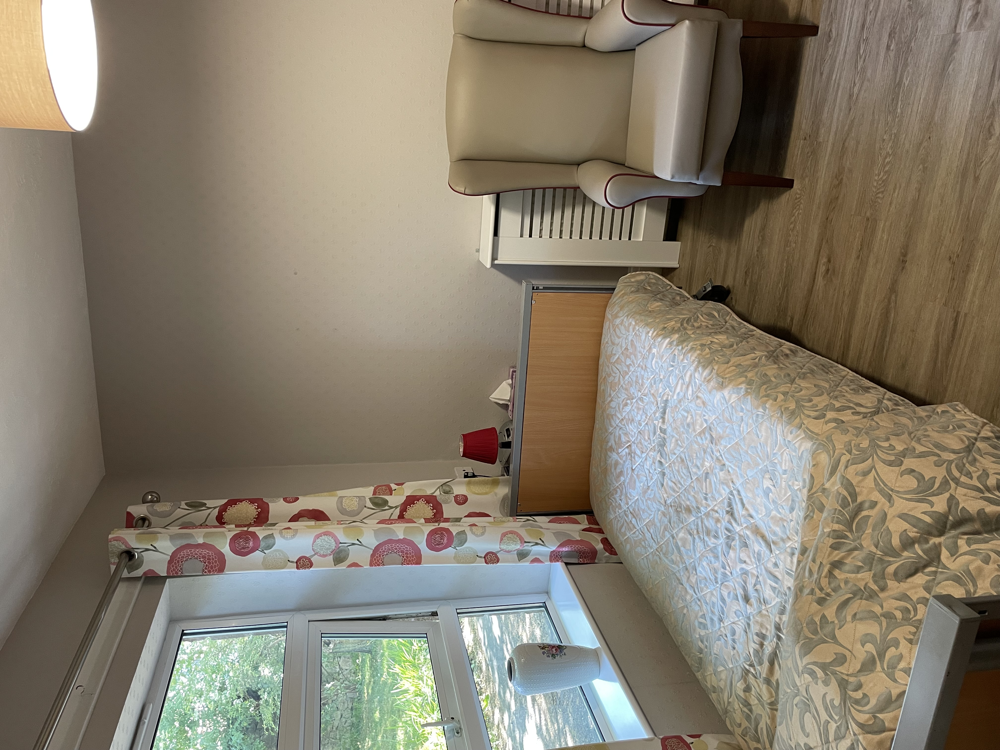
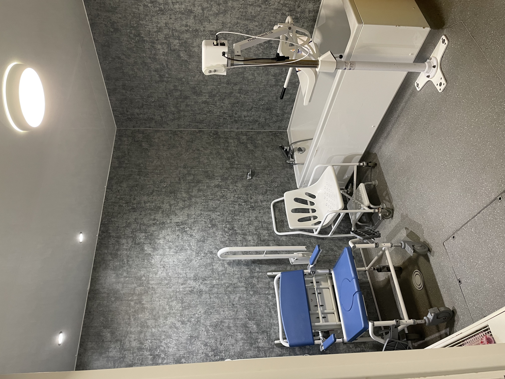
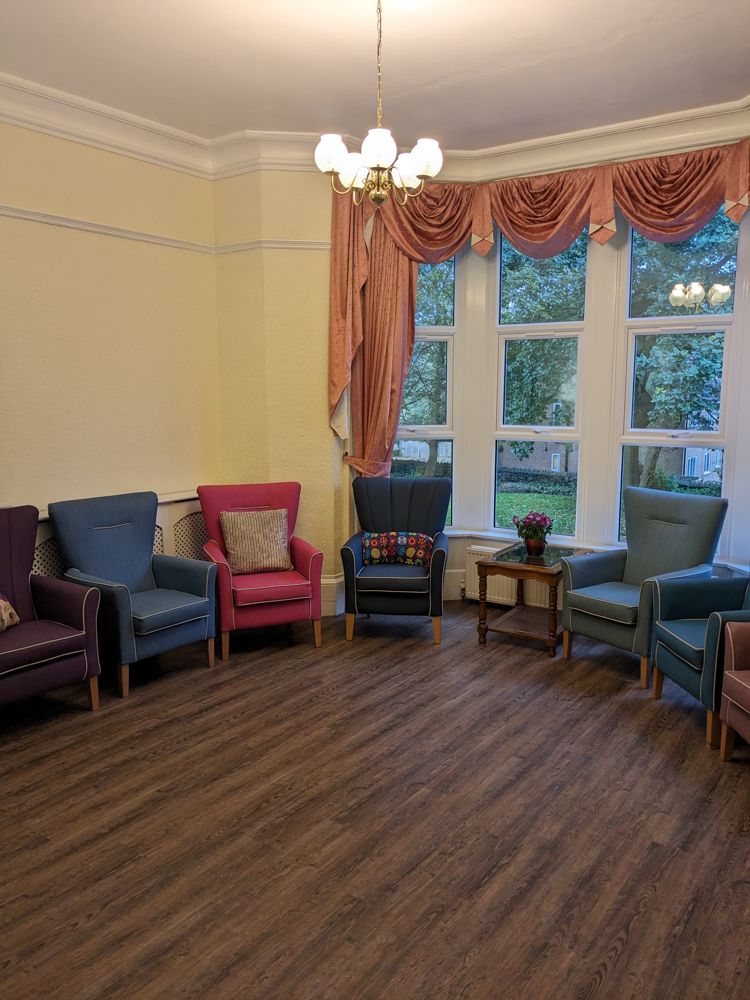

About us.
Comfort, Privacy & Independence
Moorland View is a purpose-built 32-bed facility designed to feel like a true home away from home. We prioritize the comfort and dignity of our residents through thoughtful layout and modern design:
- 🏠 Privacy First: We feature 32 single bedrooms, including 16 premium rooms with excellent en-suite facilities to ensure complete comfort and personal privacy.
- ♿ Seamless Accessibility: To make moving around effortless, 25 of our rooms are located on the ground floor.
- 🛗 Modern Platform Lift: Our upper floor is fully accessible via a modern platform lift, ensuring all residents have easy, unrestricted access to every part of our care home.

Rated "Good" by the CQC
We are delighted that our high standards, safety, and leadership have been officially recognized and rated "Good" by the Care Quality Commission.
Highly Qualified Care Team
Our staff don’t just care—they excel. Our team attends rigorous annual training updates and holds advanced Health and Social Care Diplomas (Levels 1, 3, and 5), ensuring the highest standards of professional clinical care.
Maximising Wellbeing and Daily Comfort.
🍽️ Premium Hospitality
We maintain a fully staffed, expert hospitality team. Our on-site chefs lovingly prepare nutritious, delicious meals tailored to dietary needs, while our dedicated housekeeping team keeps our home pristine. Our staff are highly praised by residents, visitors, and inspectors alike for their professionalism, kindness, and attentiveness.
🧠 Specialized Sports Therapy
Resident well-being is at the core of our philosophy. We host a visiting Sports Therapist 3x a week who engages residents in popular, therapeutic movement-to-music sessions. These specialized sessions are a firm favorite in the home, actively enhancing functional abilities, mobility, and overall happiness.
What do people think about us?
Don't just take our word for it. Hear from some residents and relatives on what they have to say.
“The home is family orientated. People are treated well, and the staff team works well together.The home is family orientated. People are treated well, and the staff team works well together.
— Staff Member, CQC Inspection Report 2023
“[Moorland View is good at] care and consideration, good outcomes.
— Relative, Feedback Survey 2022
“I feel the home's support (with health needs) has made a difference to my quality of life.
— Resident, CQC Inspection Report 2023
Your new home.
Explore our comfortable bedrooms, premium en-suite facilities and beautiful living spaces. Carefully crafted and recently renovated.



